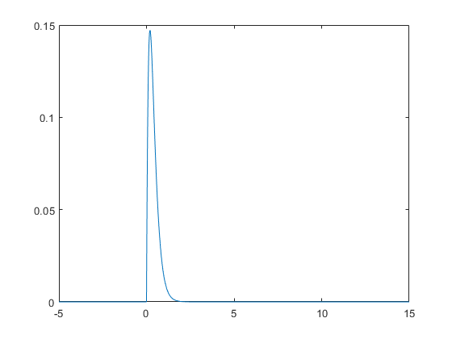
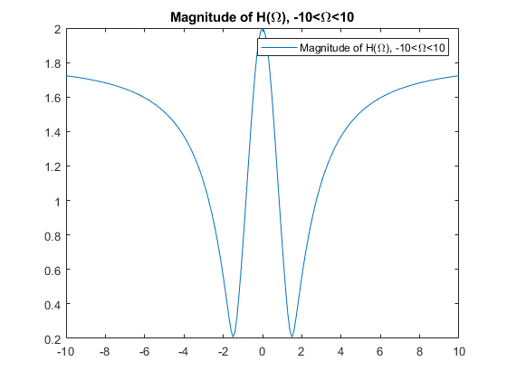

Contents
clc;
1.a
figure
t=-5:.01:15;
x = (2*t) .* exp(-5*t) .* heaviside(t);
plot(t,x)

1.b
syms t w
x = (2*t) .* exp(-5*t) .* heaviside(t);
X = fourier(x, w)
w=-20:.1:20;
X=subs(X,w);
plot(w,abs(X));
title("Magnitude Response")
legend('magnitude')
figure
plot(w,angle(X));
title("Phase Response")
legend('angle')
figure
plot(w,real(X))
title("Real Part of the Spectrum")
legend('real')
figure
plot(w,imag(X))
title("Imaginary Part of the Spectrum")
legend('imaginary')
X =
2/(5 + w*1i)^2
2
numerator = [9 3 20];
denominator = [5 -3 -10];
w = -10:.1:10;
H = freqs(numerator,denominator,w);
figure
plot(w,abs(H));
title('Magnitude of H(\Omega), -10<\Omega<10')
legend('Magnitude of H(\Omega), -10<\Omega<10')
figure
plot(w,angle(H));
title('Phase of H(\Omega), -10<\Omega <10')
legend('Phase of H(\Omega), -10<\Omega <10')


3
numerator = [2 7 0 -9];
denominator = [1 -3];
w = 0:.1:2*pi;
H = freqz(numerator, denominator, w);
figure
plot(w, abs(H))
title('| H(\omega)| ')
legend('| H(\omega)| ')
xlim([0 2*pi])
figure
plot(w,angle(H))
title('\angle H(\omega)')
xlim([0 2*pi])
legend('\angle H(\omega)')
4
numerator = [1 5 6];
denominator = [1 5 2 8];
H = tf(numerator, denominator);
zpk(H)
ans =
(s+3) (s+2)
----------------------------------
(s+4.924) (s^2 + 0.07621s + 1.625)
Continuous-time zero/pole/gain model.
5
numerator = [1 4 4];
denominator = [1 -3 2];
H = tf(numerator, denominator, 0.5);
zpk(H)
ans =
(z+2)^2
-----------
(z-2) (z-1)
Sample time: 0.5 seconds
Discrete-time zero/pole/gain model.